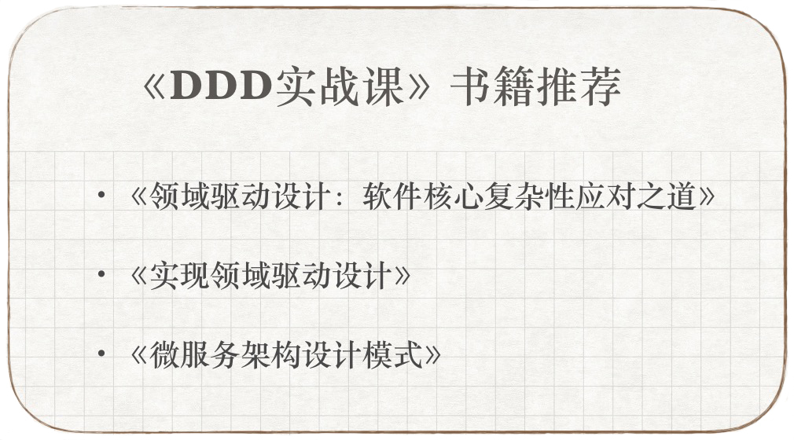

- 00 开篇词 学好了DDD，你能做什么？.md.html
- 01 领域驱动设计：微服务设计为什么要选择DDD.md.html
- 02 领域、子域、核心域、通用域和支撑域：傻傻分不清？.md.html
- 03 限界上下文：定义领域边界的利器.md.html
- 04 实体和值对象：从领域模型的基础单元看系统设计.md.html
- 05 聚合和聚合根：怎样设计聚合？.md.html
- 06 领域事件：解耦微服务的关键.md.html
- 07 DDD分层架构：有效降低层与层之间的依赖.md.html
- 08 微服务架构模型：几种常见模型的对比和分析.md.html
- 09 中台：数字转型后到底应该共享什么？.md.html
- 10 DDD、中台和微服务：它们是如何协作的？.md.html
- 11 DDD实践：如何用DDD重构中台业务模型？.md.html
- 12 领域建模：如何用事件风暴构建领域模型？.md.html
- 13 代码模型（上）：如何使用DDD设计微服务代码模型？.md.html
- 14 代码模型（下）：如何保证领域模型与代码模型的一致性？.md.html
- 15 边界：微服务的各种边界在架构演进中的作用？.md.html
- 16 视图：如何实现服务和数据在微服务各层的协作？.md.html
- 17 从后端到前端：微服务后，前端如何设计？.md.html
- 18 知识点串讲：基于DDD的微服务设计实例.md.html
- 19 总结（一）：微服务设计和拆分要坚持哪些原则？.md.html
- 20 总结（二）：分布式架构关键设计10问.md.html
- 答疑：有关3个典型问题的讲解.md.html
- 结束语 所谓高手，就是跨过坑和大海.md.html
- 捐赠
结束语 所谓高手，就是跨过坑和大海
你好，我是欧创新。
这是本专栏的最后一讲了，非常感谢你这两个月的陪伴，也非常感谢你的意见和建议。加上前期的专栏筹备，前前后后也有半年了，这半年其实也是自我提升的过程，通过专栏，我将原来不成体系的经验、方法和设计思想，整理成了中台和微服务设计的系统的理论和知识体系。
在撰写专栏时，我站在架构师的角度，尽力将我在实践过程中的经验、思考和体会，以及原创案例等全面详细地呈现给你。希望能够对你的 DDD 实践和架构设计有所帮助，也希望你能快速成长为具有企业级战略视角的架构师和 DDD 设计大师。
那说到成长，相信我们每个人的轨迹都是独特的，但有一点，你一定和我有同样的体会。那就是“所谓高手，就是跨过坑和大海！”每一步都是积累，每一步都是经验，每一步都算数！所以啊，在本专栏的最后，我还是要分享一些干货给你，也是我曾经踩过的一些坑。
很多人接触 DDD，可能是从 DDD 战术设计开始的，因此不知道如何开始 DDD 实践。这个专栏开启后，咱们就可以从领域建模开始了。有了领域模型，我们就可以划分出合理的微服务的逻辑和物理边界；也是因为有了它，我们才能识别出微服务内各关键对象，并建立它们之间的依赖关系，然后开始微服务的设计和开发。
而很多 DDD 和微服务设计的书籍，大多侧重于讲述 DDD 战术设计或者一些通用的微服务设计模式。这些书籍大多没有告诉我们：如何从业务领域开始，去构建领域模型？如何用 DDD 的思想，来指导中台和微服务设计？如何将领域模型作为输入，来设计和拆分微服务？如何将 DDD 知识体系组合起来，应用到中台和微服务的设计和开发中…
这也是本专栏与这些书籍的不同点。当然，我并不是说它们不好，只是各有侧重。在真正实践的时候，强大的知识基础自然也是刚需，你可以把专栏和书籍结合起来学习，从而发挥最大效能。
下面是我推荐的几本书，这些内容是可以和本专栏互补的，如果你有意愿进一步学习 DDD，它们是非常好的学习资料。

DDD 是一个相对复杂的方法体系，它与传统的软件开发模式或者流程存在一定的差异。在实践 DDD 时，你可能会遇到一些困难。企业需要在研发模式上有一定的调整，同时项目团队也需要提升 DDD 的设计和技术能力，培养适合 DDD 成长的土壤。拔高一点看的话，我觉得你可能会遇到这样三个大坑，下面我来说一说我的看法。
1. 业务专家或领域专家的问题
传统企业中业务人员是需求的主要提出者，但由于部门墙，他们很少会参与到软件设计和开发过程中。如果研发模式不调整，你不要奢望业务人员会主动加入到项目团队中，一起来完成领域建模。没有业务人员的参与，是不是就会觉得没有领域专家，不能领域建模了呢？其实并不是这样的。
对于成熟业务的领域建模，我们可以从团队需求人员或者经验丰富的设计或开发人员中，挑选出能够深刻理解业务内涵和业务管理要求的人员，担任领域专家完成领域建模。对于同时熟悉业务和面向对象设计的项目人员，这种设计经验尤其重要，他们可以利用面向对象的设计经验，更深刻地理解和识别出领域模型的领域对象和业务行为，有助于推进领域模型的设计。
而对于新的创业企业，他们面对的是从来没人做过的全新的业务和领域，没有任何可借鉴的经验，更不要提什么领域专家。对于这种情况，就需要团队一起经过更多次更细致的事件风暴，才能建立领域模型。当然建模过程离不开产品愿景分析，这个过程是确定和统一系统建设目标以及项目的核心竞争力在哪里。这种初创业务的领域模型往往需要经过多次迭代才能成型，不要奢望一次就可以建立一个完美的领域模型。
2. 团队 DDD 的理念和技术能力问题
完成领域建模和微服务设计后，就要投入开发和测试了。这时你可能会发现一些开发人员，并不理解 DDD 设计方法，不知道什么是聚合、分层以及边界？也不知道服务的依赖以及层与层之间的职责边界是什么？
这样容易出现设计很精妙，而开发很糟糕的状况。遇到这种情况，除了要在项目团队普及 DDD 的知识和设计理念外，你还要让所有的项目成员尽早地参与到领域建模中，事件风暴的过程除了统一团队语言外，还可以让团队成员提前了解领域模型、设计要点和注意事项。
3. DDD 设计原则问题
DDD 基于各种考虑，有很多的设计原则，也用到了很多的设计模式。条条框框多了，很多人可能就会被束缚住，总是担心或犹豫这是不是原汁原味的 DDD。其实我们不必追求极致的 DDD，这样做反而会导致过度设计，增加开发复杂度和项目成本。
DDD 的设计原则或模式，是考虑了很多具体场景或者前提的。有的是为了解耦，如仓储服务、边界以及分层，有的则是为了保证数据一致性，如聚合根管理等。在理解了这些设计原则的根本原因后，有些场景你就可以灵活把握设计方法了，你可以突破一些原则，不必受限于条条框框，大胆选择最合适的方法。
以上就是我对这三个问题的理解了。
用好 DDD 的关键，首先要领悟 DDD 的核心设计思想和理念，了解它为什么适合微服务架构，然后慢慢体会、消化、吸收和实践。DDD 体系虽然复杂，但也是有矩可循的，照着样例多做几个事件风暴，完成领域建模和微服务设计，体会 DDD 的整个设计过程。相信你很快就能领悟到 DDD 的核心设计理念了，这样就可以做到收放自如，趟出一条适合自己的 DDD 实践之路。
好了，到了该说再见的时候了。再次感谢你的陪伴，期待再相遇！愿我们都能跨过坑和大海，开辟出一片广阔新天地！
© 2019 - 2023 Liangliang Lee. Powered by gin and hexo-theme-book.